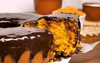

bolo de cenoura
Por Josi
As receitas de bolo de cenoura são um dos nossos maiores sucessos! E isso é
completamente compreensível. Afinal, não tem nada melhor
do que um bolo de cenoura fofinho com calda de chocolate quentinho
acompanhado de uma xícara de café no lanche da tarde. Hoje é dia
de você aprender como fazer bolo de cenoura fofinho de liquidificador!
Mais prático, é só bater todos os ingredientes, levar ao forno em uma
forma untada e aguardar ficar pronto. Essa receita rende um bolo
pequeno, perfeito para quem mora sozinho e não quer ficar com o bolo
encalhado em casa durante muitos dias. Mas se você tem uma família
maior, não tem problema, basta aumentar o número de ingredientes,
sempre seguindo a proporção da receita, que ele vai ficar bem
molhadinho e fofinho. Aqui no TudoGostoso, você encontra diversas
outras
receitas de bolos de cenoura, além de dicas para evitar alguns dos
erros mais comuns cometidos nessa receita. Confira nossas dicas!

ingrediente
- 2 cenouras médias
- 1/2 xícara de óleo
- 2 xícaras de trigo
- 3 ovos
- 1 colher (chá) de fermento em pó
- 1 xícara de açúcar
modo de preparo
- Coloque no liquidificador a cenoura descascada e picada, os ovos
inteiros e o azeite, bata até formar um creme.
- Em uma vasilha separada (pode ser a bacia da batedeira) coloque o trigo e o açúcar.
- Junte o creme do liquidificador e bata por alguns minuto
- Por último, coloque o fermento em pó e mexa bem.
- Coloque para assar em forno médio, preaquecido,
por aproximadamente 40 minutos, ou até dourar.